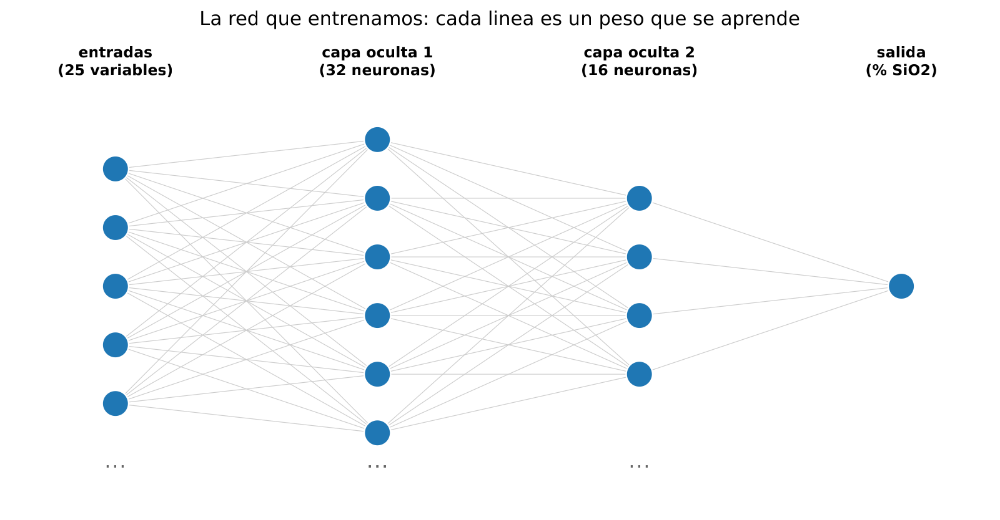
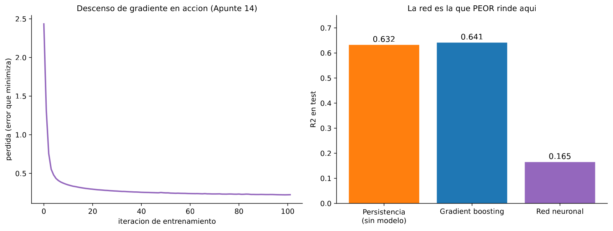
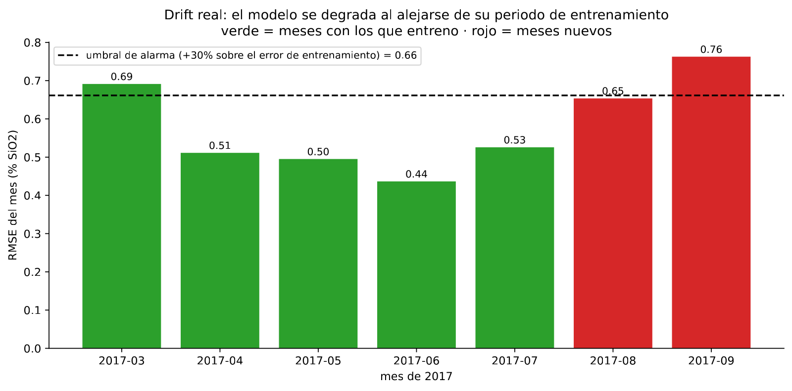
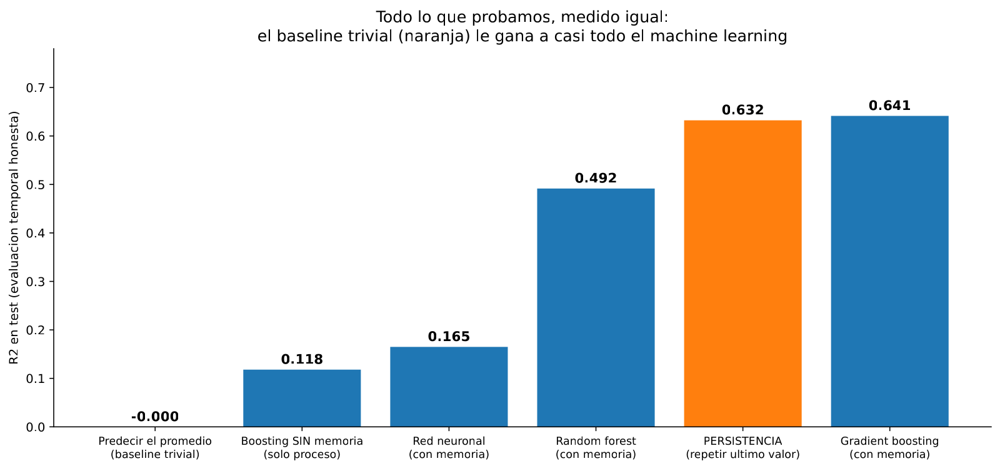
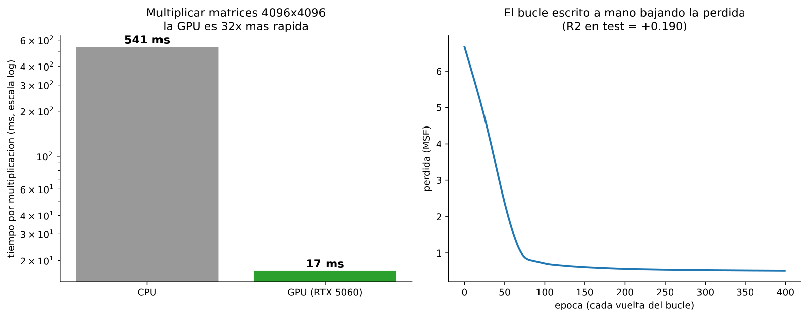

En 30 segundos
- 0,76. El RMSE de septiembre, frente a 0,509 en entrenamiento. La deriva se mide, no se supone.
- La red neuronal queda última, con R² 0,165. Por debajo del bosque, del boosting y de la persistencia.
- La GPU acelera 32 veces, de 541 ms a 17 ms. Acelera, no mejora: el R² se queda en 0,190.
- El umbral de reentrenamiento sale de los datos: 0,661, un 30 % sobre el error de entrenamiento. Se cruza en septiembre.
- El entregable no es un modelo. Es una recomendación de no desplegar, con las mediciones que la sostienen.
Qué resuelve este módulo
Quedan tres cosas por hacer y este módulo las cierra.
La primera es probar la técnica que todavía no se ha usado: redes neuronales. La segunda es medir qué le pasaría al modelo en producción, mes a mes. La tercera es convertir nueve módulos de mediciones en algo que se pueda defender delante de un comité.
El arco del proyecto
Este módulo entrega el proyecto en vez de enseñar una idea nueva, así que en lugar del ejemplo de juguete va el recorrido entero, con el número que dejó cada paso.
| Módulo | Qué se probó | Resultado |
|---|---|---|
| 1 | Radiografía del dataset | 737.453 filas, 3 cicatrices, la regla anti-fuga |
| 2 | Árbol, bosque, línea base | R² 0,04, el mismo techo para los tres |
| 3 | Recta y regularización | R² 0,010, y 0,061 regularizando |
| 4 | Validación cruzada temporal | R² −0,126, negativo y muy variable |
| 5 | Memoria y boosting | R² 0,641, el mejor del proyecto |
| 6 | Clasificación como aviso | Atrapa 113 de 182, contra 140 de la persistencia |
| 7 | El baseline correcto | La persistencia ya valía 0,632. Aporte del ML: +0,009 |
| 8 | Cuatro horizontes, cuatro ataques | 0 de 4. El veredicto aguanta |
| 9 | Estados operativos | k = 3, y uno desaparece en mayo |
Cómo se lee ese recorrido
Hay una tentación de leerlo como una curva que sube y luego se cae. No es eso.
Los módulos 2 a 5 fueron subiendo el número contra un rival flojo. El módulo 7 cambió el rival y recolocó todo. El 8 comprobó que el veredicto aguanta cuatro ataques distintos. Y el 9 explicó la causa.
Ninguna medición se cayó. Lo que cambió fue con qué se comparaban.
Lo que queda por medir aquí
Dos cosas. Si una red neuronal cambia el resultado, y cuánto se degradaría el modelo en producción.
Glosario
9 términos, en palabras simples
- Neurona. Una suma de entradas con pesos, más un sesgo, pasada por una función.
- Peso. El número que multiplica a cada entrada. Es lo que la red aprende.
- Sesgo. Un número que se suma al final. Desplaza el resultado. En inglés, bias.
- Función de activación. La que decide si la neurona se enciende. ReLU deja pasar lo positivo y convierte lo negativo en cero.
- Capa oculta. Un grupo de neuronas entre la entrada y la salida.
- Época. Una pasada completa por todos los datos de entrenamiento.
- Deriva. Que el rendimiento del modelo empeore con el tiempo porque el proceso cambió.
- Umbral de reentrenamiento. El nivel de error a partir del cual hay que volver a entrenar.
- Monitorización. Medir el error del modelo en producción, de forma continua.
Antes de la teoría: un ejemplo de juguete
Una red diminuta: dos entradas, dos neuronas ocultas y una salida. Todos los pesos ya fijados.
entradas: x1 = aire escalado x2 = amina escalada
neurona A: pesos 0,5 y −1,0 sesgo +1,0
neurona B: pesos 1,0 y 0,5 sesgo −2,0
salida: pesos 2,0 y 2,0 sesgo +0,5Paso 1. Una hora con amina alta
Entradas: x1 = 2, x2 = 3.
neurona A: 0,5·2 + (−1,0)·3 + 1,0 = 1 − 3 + 1 = −1 -> ReLU(−1) = 0
neurona B: 1,0·2 + 0,5·3 + (−2,0) = 2 + 1,5 − 2 = 1,5 -> ReLU(1,5) = 1,5
salida: 2,0·0 + 2,0·1,5 + 0,5 = 0 + 3 + 0,5 = 3,5La neurona A está apagada. Su suma dio negativo y ReLU la puso a cero, así que no participa en la respuesta.
Paso 2. Una hora con aire alto y poca amina
Entradas: x1 = 4, x2 = 0.
neurona A: 0,5·4 + (−1,0)·0 + 1,0 = 2 + 0 + 1 = 3 -> ReLU(3) = 3
neurona B: 1,0·4 + 0,5·0 + (−2,0) = 4 + 0 − 2 = 2 -> ReLU(2) = 2
salida: 2,0·3 + 2,0·2 + 0,5 = 6 + 4 + 0,5 = 10,5Ahora las dos neuronas están encendidas y la respuesta es 10,5.
Paso 3. Qué acaba de pasar
Toda la red son sumas con pesos y un corte en cero. No hay nada más.
Lo que le da poder es el paso 1: según la entrada, se encienden unas neuronas u otras. Con muchas neuronas, la red va troceando el espacio y ajustando un comportamiento distinto en cada trozo.
Y los pesos no se ponen a mano. Se aprenden con el descenso de gradiente del módulo 3, el mismo que llevaba w de 0 a 1, luego 1,5, luego 1,75.
Paso a paso
Paso 1. Entrenar la red con las mismas variables
Nada de datos nuevos. Las mismas 25 columnas del módulo 5, para que la comparación sea limpia.
Paso 2. Compararla contra todo lo anterior
Una técnica más moderna no gana por serlo. Va a la misma tabla que el resto.
Paso 3. Simular producción mes a mes
Se congela el modelo entrenado hasta julio y se mide su error en cada mes por separado. Eso es lo que vería un equipo de operación en un panel.
Paso 4. Poner el umbral con datos, no a ojo
El umbral de alarma sale del error de entrenamiento más un margen. Aquí, un 30 %.
Paso 5. Escribir la recomendación
Con todo medido, la recomendación se escribe en lenguaje de negocio y con las condiciones que la harían cambiar.
El código, por partes
Paso 1. La red neuronal
from sklearn.neural_network import MLPRegressor
red = MLPRegressor(hidden_layer_sizes=(32, 16), max_iter=300,
early_stopping=True, random_state=0)
red.fit(X_train_escalado, y_train)
print("iteraciones:", red.n_iter_)línea por línea, 5 entradas
MLPRegressor- Red neuronal para predecir un número. MLP significa perceptrón multicapa.
hidden_layer_sizes=(32, 16)- Dos capas ocultas, de 32 y 16 neuronas. La entrada y la salida las pone sklearn.
max_iter=300- Como mucho 300 épocas, o sea 300 pasadas por los datos.
early_stopping=True- Corta antes si el error de validación deja de bajar.
.n_iter_- Cuántas épocas hicieron falta de verdad.
scores: {'red': 0.165, 'boosting': 0.641, 'persistencia': 0.632}
iteraciones: 102

R² 0,165. La red queda por debajo del bosque, del boosting y de la persistencia.
Paso 2. Medir la deriva mes a mes
for mes, bloque in test.groupby(test.index.to_period("M")):
error = root_mean_squared_error(bloque[TARGET], modelo.predict(bloque[feats]))
print(f"{mes} RMSE {error:.3f}")
umbral = rmse_entrenamiento * 1.30línea por línea, 3 entradas
.groupby(test.index.to_period("M"))- Agrupa por mes natural, usando el índice de fechas.
for mes, bloque in ...- Cada vuelta trae el nombre del grupo y su trozo de tabla.
rmse_entrenamiento * 1.30- El umbral: un 30 % por encima del error con el que se entrenó. El margen se elige, y se declara.
RMSE por mes:
mes
2017-03 0.691
2017-04 0.511
2017-05 0.495
2017-06 0.437
2017-07 0.526
2017-08 0.654
2017-09 0.763
RMSE en entrenamiento: 0.509 | umbral de alarma: 0.661
Paso 3. Todo el proyecto en una sola escala
for nombre, puntuacion in resultados.items():
print(f"{nombre:<45} {puntuacion:+.3f}")línea por línea, 2 entradas
resultados.items()- Recorre un diccionario devolviendo la pareja nombre y valor en cada vuelta.
{nombre:<45}- Alinea a la izquierda rellenando hasta 45 caracteres, para que la columna de números quede recta.
Predecir el promedio (baseline trivial) -0.000
Boosting SIN memoria (solo proceso) +0.118
Red neuronal (con memoria) +0.165
Random forest (con memoria) +0.492
PERSISTENCIA (repetir ultimo valor) +0.632
Gradient boosting (con memoria) +0.641
Paso 4. La GPU, para saber cuándo sirve
import torch
print("CUDA disponible:", torch.cuda.is_available())
print("GPU:", torch.cuda.get_device_name(0))línea por línea, 2 entradas
torch.cuda.is_available()- Comprueba si PyTorch encuentra una GPU utilizable.
torch.cuda.get_device_name(0)- El nombre de la primera GPU del sistema.
PyTorch: 2.12.0.dev20260408+cu128
CUDA disponible: True
GPU: NVIDIA GeForce RTX 5060 Laptop GPU
Capacidad de computo: sm_120 (Blackwell = sm_120)
CUDA compilada en torch: 12.8
times (ms): {'cpu': 540.7, 'cuda': 17.1}
R2 test: +0.190
El resultado, medido
Qué esperábamos. Que la red neuronal quedara en la zona media, comparable al bosque. Es lo normal en datos tabulares.
Qué salió. Última de todas las que usan memoria.
| Modelo | R² prueba |
|---|---|
| Predecir el promedio | −0,000 |
| Boosting sin memoria | +0,118 |
| Red neuronal con memoria | +0,165 |
| Random forest con memoria | +0,492 |
| Persistencia, sin modelo | +0,632 |
| Gradient boosting con memoria | +0,641 |
Qué significa. Con datos tabulares y pocos miles de filas, los modelos de árboles siguen ganando a las redes. La red necesita muchos más datos para compensar su flexibilidad, y aquí solo hay 4.091 horas.
La deriva, medida
| Mes | RMSE | Estado |
|---|---|---|
| Marzo | 0,691 | entrenamiento, por encima del umbral |
| Abril | 0,511 | entrenamiento |
| Mayo | 0,495 | entrenamiento |
| Junio | 0,437 | entrenamiento, el mejor mes |
| Julio | 0,526 | entrenamiento |
| Agosto | 0,654 | producción, rozando el umbral |
| Septiembre | 0,763 | producción, cruza el umbral |
El umbral es 0,661, un 30 % sobre el 0,509 del entrenamiento. Septiembre lo cruza con claridad, y ahí es donde un equipo de operación tendría que reentrenar.
Marzo también está por encima, y eso es lo interesante. Marzo forma parte del entrenamiento y aun así el modelo lo predice mal. La explicación la dio el módulo 9: marzo es el 100 % estado 1, y ese estado desaparece en mayo. El modelo, entrenado sobre una mezcla, no describe bien ninguno de los dos regímenes.
La GPU
La GPU multiplica matrices 32 veces más rápido, de 541 a 17 milisegundos. El R² del modelo entrenado en ella es 0,190.
Acelera, no mejora. Es la lección práctica: la GPU compra tiempo, no calidad. Y para 4.091 filas de datos tabulares, ni siquiera compra tiempo que haga falta.
Discrepancia declarada: el apunte original de este experimento reportaba 34 veces y 580 milisegundos. Al volver a medirlo salen 541 milisegundos y 32 veces. Se reporta la medición nueva.
La recomendación
No desplegar machine learning para predecir el SiO₂ del concentrado con estos datos.
Sostenida por cuatro mediciones:
- El aporte sobre repetir el último análisis es +0,009 a una hora.
- A partir de las cinco horas nadie supera a predecir la media.
- El veredicto resistió cuatro ataques: reentrenamiento, ventana móvil, modelos por régimen y reformular el problema como aviso.
- La causa está identificada: la planta cambió de régimen operativo en mayo, y no hay una relación estable que aprender.
Qué haría falta para volver a intentarlo
- Registro de consignas y de cambios de operación. Es lo que falta en el archivo, y sin ello el cambio de mayo es invisible para el modelo.
- Análisis de laboratorio más frecuentes, o un analizador en línea. Con el objetivo medido cada pocos minutos, la persistencia dejaría de ser tan fuerte.
- Datos de al menos un año, para tener varios ciclos de campaña en vez de un solo cambio.
- Un experimento con excitación, moviendo consignas a propósito. Es la única forma de separar causa de correlación en una planta controlada, y es lo que trata el módulo 14.
Y lo que viene después
El proyecto original termina aquí. La parte 2 del curso, módulos 11 a 14, cierra los huecos de machine learning que quedaron. Y vuelve a poner el veredicto a prueba con técnicas que nunca se llegaron a probar.
Ojo
- Una red neuronal no gana por ser moderna. Aquí queda última entre las que usan memoria, con 0,165 frente a 0,641 del boosting.
- Las redes necesitan muchos datos. 4.091 filas es poquísimo para 25 entradas y dos capas.
- La GPU acelera, no mejora. Mismo modelo, mismo resultado, 32 veces menos tiempo.
- El umbral de reentrenamiento se declara al desplegar, no cuando salta la alarma.
- Un mes de entrenamiento con error alto es una señal, no ruido. Marzo lo tiene, y apunta al cambio de régimen.
- La deriva se mide en producción, no se supone. Sin monitorización nadie se entera de que el modelo dejó de servir.
Puente metalúrgico
La red neuronal es un modelo empírico de planta con muchos parámetros. Sirve cuando hay miles de campañas registradas. Con seis meses de un solo circuito, ajustar cientos de pesos es como ajustar un modelo de seis constantes a tres puntos experimentales.
La deriva es la descalibración de un analizador en línea. No falla de golpe: va desviándose mientras nadie mira, y por eso existen los patrones de verificación diarios. El umbral de 0,661 es exactamente eso, un patrón de verificación.
Y la recomendación final es un informe de prueba con resultado negativo, que en metalurgia se entrega igual que uno positivo. Si una campaña de pruebas demuestra que un reactivo nuevo no mejora la recuperación, ese informe ahorra la inversión. Aquí ahorra el despliegue de un sistema que habría dado avisos peores que mirar el último análisis.
Repaso
La red neuronal queda última. ¿Significa que las redes no sirven para procesos?
No. Significa que no sirven para este conjunto de datos, y por una razón concreta: el tamaño.
Hay 4.091 horas útiles y 25 variables de entrada. Una red de dos capas con 32 y 16 neuronas tiene cientos de pesos que ajustar con esos pocos miles de ejemplos. Los modelos de árboles necesitan menos datos para el mismo trabajo, y por eso siguen ganando en datos tabulares de este tamaño. Con años de histórico, o con datos de secuencia tratados como secuencia, la comparación podría ser otra. El módulo 11 lo comprueba.
El error de marzo es 0,691 y marzo está en el entrenamiento. ¿Cómo se explica?
Con el hallazgo del módulo 9. Marzo es el 100 % estado operativo 1, y ese estado desaparece en mayo.
El modelo se entrenó sobre marzo a julio, o sea sobre una mezcla de dos regímenes muy distintos. El resultado es un modelo promedio que describe razonablemente bien los meses centrales, junio con 0,437, y mal los extremos. Un error alto dentro del propio entrenamiento no es ruido: es la señal de que los datos no son homogéneos y de que un solo modelo no puede cubrirlos.
¿Cómo se elige el umbral de reentrenamiento?
Con el error de entrenamiento más un margen declarado de antemano, no mirando cuándo empieza a fallar.
Aquí el RMSE de entrenamiento es 0,509 y el margen elegido es un 30 %, así que el umbral queda en 0,661. Septiembre lo cruza con 0,763. Lo importante del procedimiento es el orden: el umbral se fija al desplegar, cuando todavía no se sabe qué va a pasar. Fijarlo después de ver la curva es elegir el número que justifica la decisión que ya se había tomado.
La GPU acelera 32 veces. ¿Merece la pena para este proyecto?
No, y saber eso también es un resultado.
La GPU multiplica matrices grandes 32 veces más rápido, de 541 a 17 milisegundos, y con ella el R² del modelo es 0,190 en vez de 0,165. La diferencia viene del modelo, no del hardware: entrenar más rápido no cambia lo que hay que aprender. La GPU se justifica cuando el entrenamiento es el cuello de botella, que es el caso con imágenes, texto o secuencias largas. Con 4.091 filas tabulares, el cuello de botella es la información disponible.
Resume el proyecto entero en dos minutos, como en una entrevista.
El encargo era predecir el porcentaje de sílice del concentrado de una planta de flotación de hierro, en tiempo real, a partir de sensores de proceso. Seis meses de datos reales, 737.453 filas.
Con evaluación temporal honesta, el techo de todos los modelos tabulares fue R² 0,04. Construyendo variables con memoria del proceso subió a 0,64, que parecía un éxito. El paso decisivo fue medir el baseline correcto: repetir el último análisis de laboratorio ya daba 0,632, así que todo el machine learning aportaba nueve milésimas. A partir de las cinco horas de antelación ningún método supera a predecir la media.
El veredicto se atacó por cuatro vías, incluido reentrenar a diario y reformular el problema como aviso de fuera de especificación, y ninguna lo movió. El aprendizaje no supervisado explicó por qué: la planta cambió de régimen operativo en mayo y no hay una relación estable que aprender.
El entregable es una recomendación fundamentada de no desplegar, más la lista de qué haría falta para que un segundo intento tuviera sentido. Defender un resultado negativo bien medido es una habilidad distinta de obtener uno bueno, y en una planta ahorra más dinero.